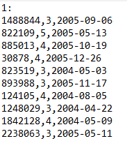
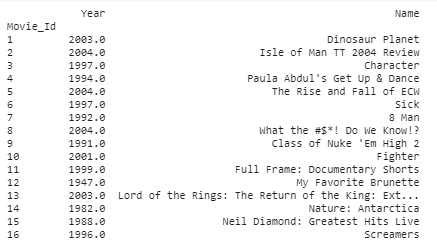
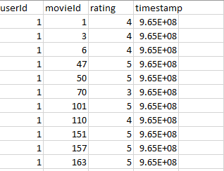

<!--navigation bar-->
<mat-toolbar color="primary">
  <mat-toolbar-row>
      <mat-icon>description</mat-icon>
      <button routerLink="/dataset" class="nav" style="margin-right:20px" mat-flat-button color="primary">Dataset</button>
      <mat-icon>create</mat-icon>
      <button routerLink="/working" class="nav" style="margin-right:20px" mat-flat-button color="primary">Outputs</button>
      <mat-icon>poll</mat-icon>
      <button routerLink="/result" class="nav" mat-flat-button color="primary">Analysis</button>
      </mat-toolbar-row>
      </mat-toolbar>
      <mat-grid-list cols="2"  rowHeight="600px">
        <mat-grid-tile class="left" rowHeight="100px">
         <h1 style="position:absolute;top:20px;left:250px;color:white">Netflix</h1>
           <mat-card style="position:absolute;left:150px;top:90px"></mat-card><br>    
           <mat-card style="position:absolute;top:330px;"></mat-card>    
        </mat-grid-tile>
        <mat-grid-tile class="right">
            <h1 style="position:absolute;top:20px;left:250px;color:white">MovieLens</h1>
      <mat-card></mat-card>
               
        </mat-grid-tile>
        </mat-grid-list>
